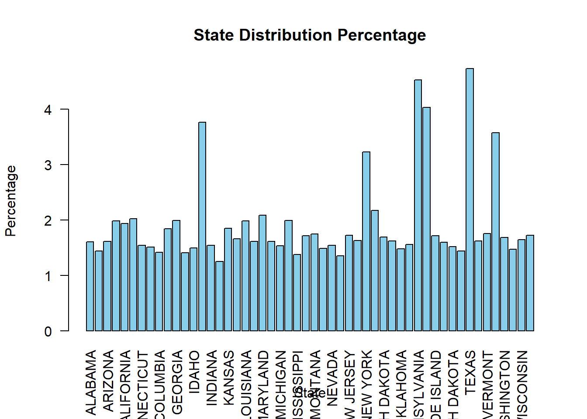
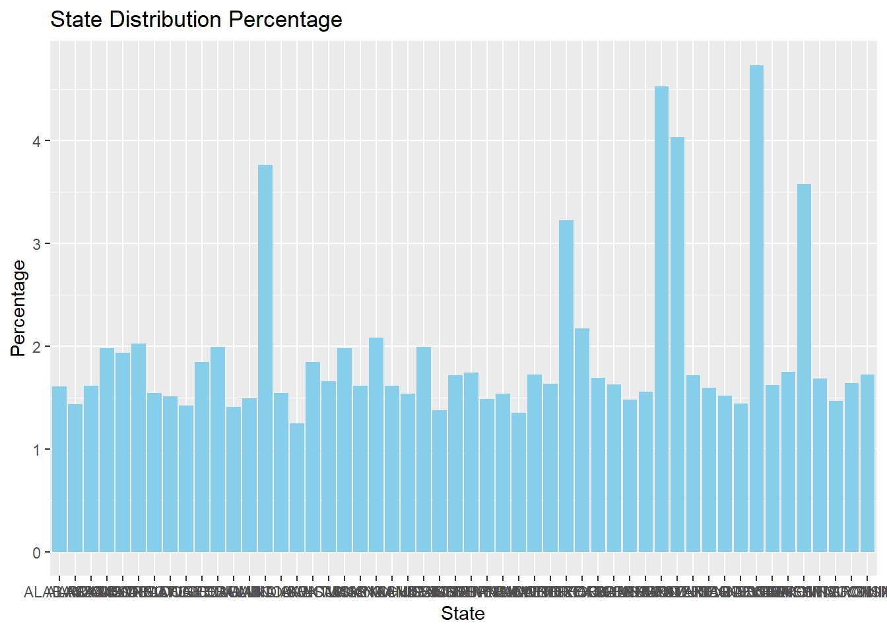
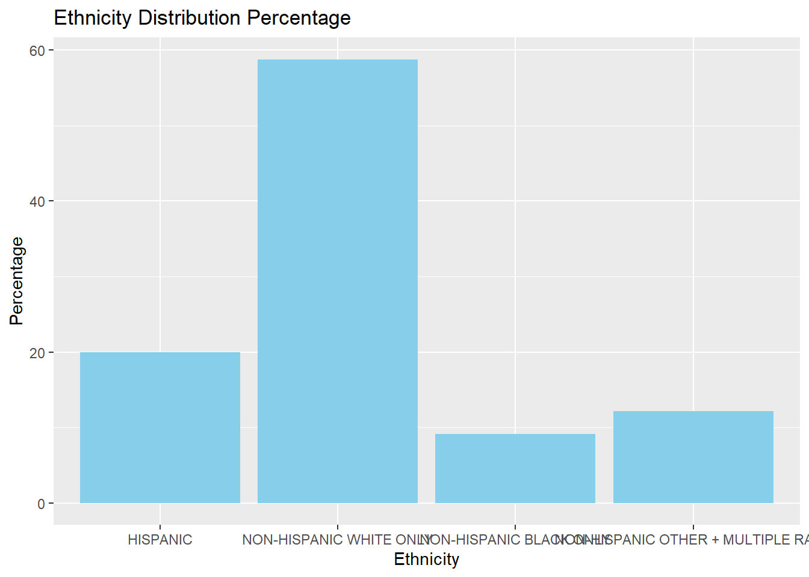
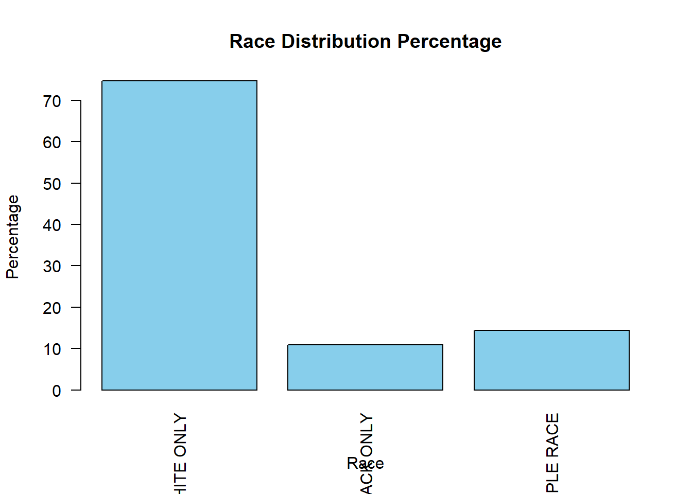
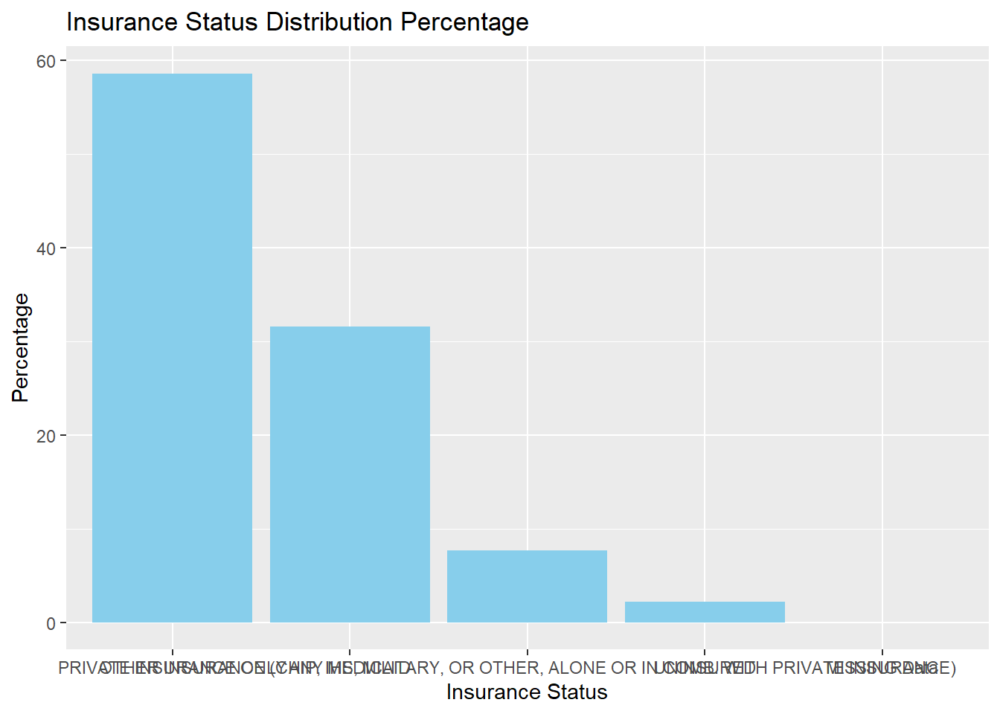
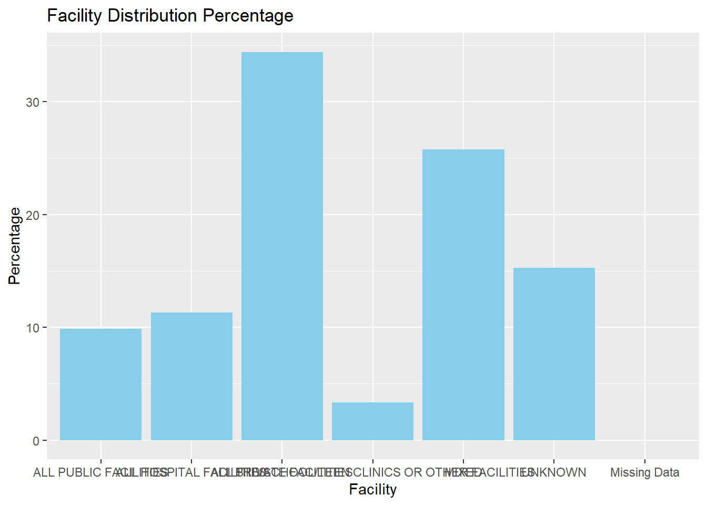
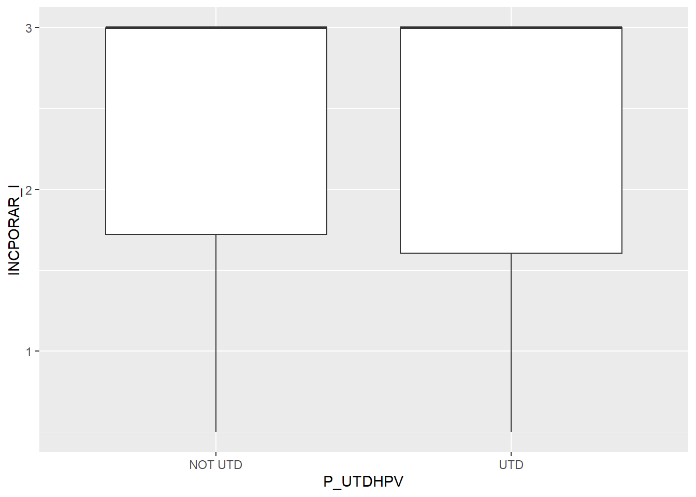
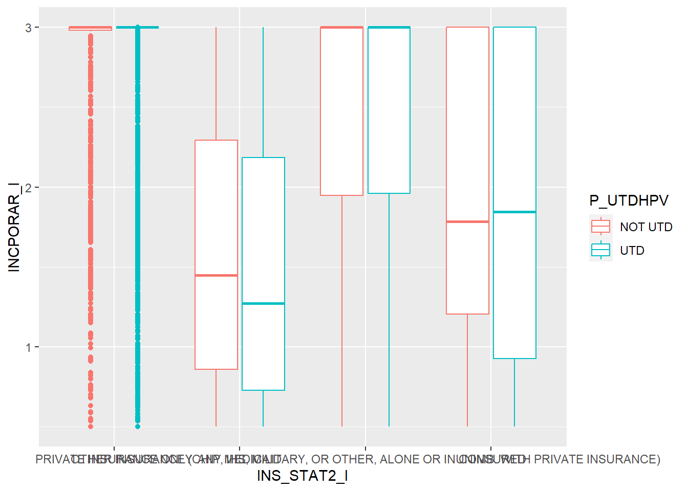

#load needed packages. make sure they are installed.
library(here) #for data loading/saving
library(dplyr)
library(skimr)
library(ggplot2)Exploratory Analysis on CDC Teen Vaccination Surveys
The following file will load the cleaned data and perform some exploration.
The categorical and numerical variables of interest will be plotted and placed in models for analysis.
Loading the .R script which performed the analysis
Loading the Packages
#Path to data. Note the use of the here() package and not absolute paths
data_location <- here::here("data","processed-data","cleandata1.rds")
#load data
mydata <- readRDS(data_location)Showing Summary of Overall Data Set
The following data set has been cleaned. Any observations with NAs has been removed.
summary_df = skimr::skim(mydata)
print(summary_df)── Data Summary ────────────────────────
Values
Name mydata
Number of rows 16564
Number of columns 23
_______________________
Column type frequency:
factor 20
numeric 3
________________________
Group variables None
── Variable type: factor ───────────────────────────────────────────────────────
skim_variable n_missing complete_rate ordered n_unique
1 EDUC1 0 1 FALSE 4
2 INCPOV1 0 1 FALSE 4
3 INCQ298A 0 1 FALSE 14
4 LANGUAGE 0 1 FALSE 3
5 MOBIL_1 0 1 FALSE 2
6 RACEETHK 0 1 FALSE 4
7 RACE_K 0 1 FALSE 3
8 RENT_OWN 0 1 FALSE 5
9 SEX 0 1 FALSE 2
10 STATE 0 1 FALSE 52
11 FACILITY 0 1 FALSE 6
12 P_U13HPV 0 1 FALSE 2
13 P_U13HPV3 0 1 FALSE 2
14 P_UTDHPV 0 1 FALSE 2
15 P_UTDHPV_15 0 1 FALSE 2
16 P_UTDHPV_15INT 0 1 FALSE 2
17 P_UTDHPV2 0 1 FALSE 2
18 P_UTDHPV3 0 1 FALSE 2
19 INS_STAT2_I 0 1 FALSE 4
20 INS_BREAK_I 0 1 FALSE 4
top_counts
1 COL: 9024, MOR: 4142, 12 : 2451, LES: 947
2 ABO: 9345, ABO: 4586, BEL: 2184, UNK: 449
3 $75: 9345, $60: 1273, $40: 934, $50: 908
4 ENG: 15290, SPA: 1167, OTH: 107
5 DID: 12849, MOV: 3715, DON: 0, MIS: 0
6 NON: 9738, HIS: 3303, NON: 2007, NON: 1516
7 WHI: 12378, OTH: 2379, BLA: 1807
8 OWN: 12432, REN: 3688, OTH: 410, REF: 22
9 MAL: 8686, FEM: 7878, DON: 0, MIS: 0
10 TEX: 784, PEN: 750, PUE: 668, ILL: 623
11 ALL: 5700, MIX: 4271, UNK: 2528, ALL: 1874
12 UTD: 10874, NOT: 5690, Mis: 0
13 NOT: 15838, UTD: 726, Mis: 0
14 UTD: 13099, NOT: 3465, Mis: 0
15 UTD: 10838, NOT: 5726, Mis: 0
16 UTD: 10747, NOT: 5817, Mis: 0
17 UTD: 10966, NOT: 5598, Mis: 0
18 NOT: 15510, UTD: 1054, Mis: 0
19 PRI: 9702, ANY: 5230, OTH: 1273, UNI: 359
20 CUR: 15500, CUR: 705, CUR: 254, CUR: 105
── Variable type: numeric ──────────────────────────────────────────────────────
skim_variable n_missing complete_rate mean sd p0 p25 p50
1 SEQNUMT 0 1 21670. 12635. 1 10652. 21614.
2 AGE 0 1 15.0 1.40 13 14 15
3 INCPORAR_I 0 1 2.35 0.886 0.5 1.62 3
p75 p100 hist
1 32628. 43737 ▇▇▇▇▇
2 16 17 ▇▇▇▇▇
3 3 3 ▂▁▁▁▇# save to file
summarytable_file = here("results","tables", "summarytable.rds")
saveRDS(summary_df, file = summarytable_file)Addressing Numerical Data Set
The distribution of the numerical income to poverty ratio can be shown below. It displays a value from 1-3. A ratio displaying less than 1 depicts an income less than the poverty level. Any income ratio >1 indicates an income greater than the poverty level. Most of the observations were gathered from households with income ratios of 3, as shown by the skewed plot below.
p1 <- mydata %>% ggplot(aes(x=INCPORAR_I)) + geom_histogram()
plot(p1)`stat_bin()` using `bins = 30`. Pick better value with `binwidth`.
figure_file = here("results", "figures", "income.png")
ggsave(filename = figure_file, plot=p1) Saving 7 x 5 in image
`stat_bin()` using `bins = 30`. Pick better value with `binwidth`.Addressing Categorical Data
The state variable shows a more uniformed distribution, suggesting that the observations were gathered fairly across the US states and territory. Although it is noted a few territories provides 0 observations.
summary(mydata$STATE) ALABAMA DELAWARE DISTRICT OF COLUMBIA
266 250 235
FLORIDA GEORGIA HAWAII
305 330 233
IDAHO ILLINOIS INDIANA
247 623 256
IOWA ALASKA KANSAS
207 238 306
KENTUCKY LOUISIANA MAINE
275 328 267
MARYLAND MASSACHUSETTS MICHIGAN
345 267 254
MINNESOTA MISSISSIPPI MISSOURI
330 228 284
MONTANA NEBRASKA NEVADA
289 246 255
NEW HAMPSHIRE NEW JERSEY NEW MEXICO
224 285 270
NEW YORK NORTH CAROLINA NORTH DAKOTA
534 360 280
OHIO ARIZONA OKLAHOMA
269 267 245
OREGON PENNSYLVANIA RHODE ISLAND
258 750 284
SOUTH CAROLINA SOUTH DAKOTA TENNESSEE
264 251 239
TEXAS UTAH ARKANSAS
784 268 328
VERMONT VIRGINIA WASHINGTON
290 592 279
WEST VIRGINIA WISCONSIN WYOMING
243 272 285
CALIFORNIA GUAM PUERTO RICO
320 0 668
U.S. VIRGIN ISLANDS COLORADO CONNECTICUT
0 335 256 state_distribution <- table(mydata$STATE)
# Convert STATE to character
mydata$STATE <- as.character(mydata$STATE)
# Calculate distribution percentage
state_distribution_percentage <- prop.table(table(mydata$STATE))*100
print(state_distribution_percentage)
ALABAMA ALASKA ARIZONA
1.605892 1.436851 1.611929
ARKANSAS CALIFORNIA COLORADO
1.980198 1.931901 2.022458
CONNECTICUT DELAWARE DISTRICT OF COLUMBIA
1.545520 1.509297 1.418739
FLORIDA GEORGIA HAWAII
1.841343 1.992272 1.406665
IDAHO ILLINOIS INDIANA
1.491186 3.761169 1.545520
IOWA KANSAS KENTUCKY
1.249698 1.847380 1.660227
LOUISIANA MAINE MARYLAND
1.980198 1.611929 2.082830
MASSACHUSETTS MICHIGAN MINNESOTA
1.611929 1.533446 1.992272
MISSISSIPPI MISSOURI MONTANA
1.376479 1.714562 1.744748
NEBRASKA NEVADA NEW HAMPSHIRE
1.485149 1.539483 1.352330
NEW JERSEY NEW MEXICO NEW YORK
1.720599 1.630041 3.223859
NORTH CAROLINA NORTH DAKOTA OHIO
2.173388 1.690413 1.624004
OKLAHOMA OREGON PENNSYLVANIA
1.479111 1.557595 4.527892
PUERTO RICO RHODE ISLAND SOUTH CAROLINA
4.032842 1.714562 1.593818
SOUTH DAKOTA TENNESSEE TEXAS
1.515334 1.442888 4.733156
UTAH VERMONT VIRGINIA
1.617967 1.750785 3.574016
WASHINGTON WEST VIRGINIA WISCONSIN
1.684376 1.467037 1.642115
WYOMING
1.720599 p2 <- barplot(state_distribution_percentage,
main = "State Distribution Percentage",
xlab = "State",
ylab = "Percentage",
col = "skyblue", # Set bar color
las = 2) 
#Recreating the graph in ggplot
#adjusting the percent disitrbution data into a data frame
data_df <- as.data.frame(as.table(state_distribution_percentage))
#plot with ggplot
p3 <- ggplot(data_df, aes(x = Var1, y = Freq)) +
geom_bar(stat = "identity", fill = "skyblue") +
labs(title = "State Distribution Percentage",
x = "State",
y = "Percentage")
#Viewing the plot to confirm it is done properly
print(p3)
figure_file = here("results", "figures", "state.distribution.png")
ggsave(filename = figure_file, plot=p3) Saving 7 x 5 in imageThe family income variable provides a more normal distribution with the majority of the observation coming from $75000 income level.
summary(mydata$INCQ298A)$35001 - $40000 $40001 - $50000 $50001 - $60000 $60001 - $75000 $75001+
569 934 908 1273 9345
$0 - $7500 $7501 - $10000 $10001 - $17500 $17501 - $20000 $20001 - $25000
293 223 475 431 514
DON'T KNOW $25001 - $30000 $30001 - $35000 REFUSED
301 528 429 341 Family_income_distribution <- table(mydata$INCQ298A)
# Calculate distribution percentage
Family_Income_distribution <- prop.table(table(mydata$INCQ298A))*100
print(Family_Income_distribution)
$35001 - $40000 $40001 - $50000 $50001 - $60000 $60001 - $75000 $75001+
3.435161 5.638735 5.481768 7.685342 56.417532
$0 - $7500 $7501 - $10000 $10001 - $17500 $17501 - $20000 $20001 - $25000
1.768896 1.346293 2.867665 2.602028 3.103115
DON'T KNOW $25001 - $30000 $30001 - $35000 REFUSED
1.817194 3.187636 2.589954 2.058681 p4 <- barplot(Family_Income_distribution,
main = "Family Income Distribution Percentage",
xlab = "Income levels",
ylab = "Percentage",
col = "skyblue", # Set bar color
las = 2) 
#Recreating the graph in ggplot
#adjusting the percent disitrbution data into a data frame
family_income_df <- as.data.frame(as.table(Family_Income_distribution))
#plot with ggplot
p5 <- ggplot(family_income_df, aes(x = Var1, y = Freq)) +
geom_bar(stat = "identity", fill = "skyblue") +
labs(title = "Family Income Distribution Percentage",
x = "Income",
y = "Percentage")
#Viewing the plot to confirm it is done properly
print(p5)
figure_file = here("results", "figures", "family.income.distribution.png")
ggsave(filename = figure_file, plot=p5) Saving 7 x 5 in imageThe race and ethnicity variables show a normal distribution.
summary(mydata$RACEETHK) HISPANIC NON-HISPANIC WHITE ONLY
3303 9738
NON-HISPANIC BLACK ONLY NON-HISPANIC OTHER + MULTIPLE RACE
1516 2007 ethnicity_distribution <- table(mydata$RACEETHK)
# Calculate distribution percentage
Ethnicity_distribution <- prop.table(table(mydata$RACEETHK))*100
print(Ethnicity_distribution)
HISPANIC NON-HISPANIC WHITE ONLY
19.940836 58.790147
NON-HISPANIC BLACK ONLY NON-HISPANIC OTHER + MULTIPLE RACE
9.152379 12.116638 p6 <- barplot(Ethnicity_distribution,
main = "Ethnicity Distribution Percentage",
xlab = "Ethnicity",
ylab = "Percentage",
col = "skyblue", # Set bar color
las = 2) 
#Recreating the graph in ggplot
#adjusting the percent disitrbution data into a data frame
ethnicity_df <- as.data.frame(as.table(Ethnicity_distribution))
#plot with ggplot
p7 <- ggplot(ethnicity_df, aes(x = Var1, y = Freq)) +
geom_bar(stat = "identity", fill = "skyblue") +
labs(title = "Ethnicity Distribution Percentage",
x = "Ethnicity",
y = "Percentage")
#Viewing the plot to confirm it is done properly
print(p7)
figure_file = here("results", "figures", "ethnicity.distribution.png")
ggsave(filename = figure_file, plot=p7) Saving 7 x 5 in imagesummary(mydata$RACE_K) WHITE ONLY BLACK ONLY OTHER + MULTIPLE RACE
12378 1807 2379 race_distribution <- table(mydata$RACE_K)
# Calculate distribution percentage
Race_distribution <- prop.table(table(mydata$RACE_K))*100
print(Race_distribution)
WHITE ONLY BLACK ONLY OTHER + MULTIPLE RACE
74.72833 10.90920 14.36247 p8 <- barplot(Race_distribution,
main = "Race Distribution Percentage",
xlab = "Race",
ylab = "Percentage",
col = "skyblue", # Set bar color
las = 2) 
#Recreating the graph in ggplot
#adjusting the percent disitrbution data into a data frame
race_df <- as.data.frame(as.table(Race_distribution))
#plot with ggplot
p9 <- ggplot(race_df, aes(x = Var1, y = Freq)) +
geom_bar(stat = "identity", fill = "skyblue") +
labs(title = "Race Distribution Percentage",
x = "Race",
y = "Percentage")
#Viewing the plot to confirm it is done properly
print(p9)
figure_file = here("results", "figures", "race.distribution.png")
ggsave(filename = figure_file, plot=p9) Saving 7 x 5 in imageThe Insurance status variable shows that the majority of the observations came from households with private insurance only. This is mirrored in the facility variable, where a majority of its observation s show private facilities being the location.
summary(mydata$INS_STAT2_I) PRIVATE INSURANCE ONLY
9702
ANY MEDICAID
5230
OTHER INSURANCE (CHIP, IHS, MILITARY, OR OTHER, ALONE OR IN COMB. WITH PRIVATE INSURANCE)
1273
UNINSURED
359
MISSING Data
0 insurance_status_distribution <- table(mydata$INS_STAT2_I)
# Calculate distribution percentage
Insurance_distribution <- prop.table(table(mydata$INS_STAT2_I))*100
print(Insurance_distribution)
PRIVATE INSURANCE ONLY
58.572809
ANY MEDICAID
31.574499
OTHER INSURANCE (CHIP, IHS, MILITARY, OR OTHER, ALONE OR IN COMB. WITH PRIVATE INSURANCE)
7.685342
UNINSURED
2.167351
MISSING Data
0.000000 p10 <- barplot(Insurance_distribution,
main = "Insurance Status Distribution Percentage",
xlab = "Insurance Status",
ylab = "Percentage",
col = "skyblue", # Set bar color
las = 2) 
#Recreating the graph in ggplot
#adjusting the percent disitrbution data into a data frame
insurance_df <- as.data.frame(as.table(Insurance_distribution))
#plot with ggplot
p11 <- ggplot(insurance_df, aes(x = Var1, y = Freq)) +
geom_bar(stat = "identity", fill = "skyblue") +
labs(title = "Insurance Status Distribution Percentage",
x = "Insurance Status",
y = "Percentage")
#Viewing the plot to confirm it is done properly
print(p11)
figure_file = here("results", "figures", "insurance.status.distribution.png")
ggsave(filename = figure_file, plot=p11) Saving 7 x 5 in imagesummary(mydata$FACILITY) ALL PUBLIC FACILITIES
1635
ALL HOSPITAL FACILITIES
1874
ALL PRIVATE FACILITIES
5700
ALL STD/SCHOOL/TEEN CLINICS OR OTHER FACILITIES
556
MIXED
4271
UNKNOWN
2528
Missing Data
0 Facility_distribution <- table(mydata$FACILITY)
# Calculate distribution percentage
Facility_distribution <- prop.table(table(mydata$FACILITY))*100
print(Facility_distribution)
ALL PUBLIC FACILITIES
9.870804
ALL HOSPITAL FACILITIES
11.313692
ALL PRIVATE FACILITIES
34.411978
ALL STD/SCHOOL/TEEN CLINICS OR OTHER FACILITIES
3.356677
MIXED
25.784835
UNKNOWN
15.262014
Missing Data
0.000000 p12 <- barplot(Facility_distribution,
main = "Facility Distribution Percentage",
xlab = "Facility",
ylab = "Percentage",
col = "skyblue", # Set bar color
las = 2) 
#Recreating the graph in ggplot
#adjusting the percent disitrbution data into a data frame
facility_df <- as.data.frame(as.table(Facility_distribution))
#plot with ggplot
p13 <- ggplot(facility_df, aes(x = Var1, y = Freq)) +
geom_bar(stat = "identity", fill = "skyblue") +
labs(title = "Facility Distribution Percentage",
x = "Facility",
y = "Percentage")
#Viewing the plot to confirm it is done properly
print(p13)
figure_file = here("results", "figures", "facility.distribution.png")
ggsave(filename = figure_file, plot=p13) Saving 7 x 5 in imageThe vaccination variable indicates nearly 80% of the observations had an Up-to-date status for the 1+ shot HPV vaccination.
summary(mydata$P_UTDHPV) NOT UTD UTD Missing Data
3465 13099 0 Vaccination_status_distribution <- table(mydata$P_UTDHPV)
# Calculate distribution percentage
Vaccination_status_distribution <- prop.table(table(mydata$P_UTDHPV))*100
print(Vaccination_status_distribution)
NOT UTD UTD Missing Data
20.91886 79.08114 0.00000 p14 <- barplot(Vaccination_status_distribution,
main = "Vaccination Status Distribution Percentage",
xlab = "Vaccination Status",
ylab = "Percentage",
col = "skyblue", # Set bar color
las = 2) 
#Recreating the graph in ggplot
#adjusting the percent disitrbution data into a data frame
Vaccine_df <- as.data.frame(as.table(Vaccination_status_distribution))
#plot with ggplot
p15 <- ggplot(Vaccine_df, aes(x = Var1, y = Freq)) +
geom_bar(stat = "identity", fill = "skyblue") +
labs(title = "Vaccination Status Distribution Percentage",
x = "Vaccination Status",
y = "Percentage")
#Viewing the plot to confirm it is done properly
print(p15)
figure_file = here("results", "figures", "vaccination.status.distribution.png")
ggsave(filename = figure_file, plot=p15) Saving 7 x 5 in imageModel and Plot Fitting
Fit 1
A boxplot is created with income-poverty ratio to vaccination status. The box plot indicates little difference between the two status. A statistical model is fitted to the same variables. A p-value of 0.1358 suggests there is little significance between the income-poverty variable and the vaccination status.
#Stratifying the Income-poverty levels to the vaccination status in a boxplot figure
p16 <- mydata %>% ggplot(aes(x=P_UTDHPV, y=INCPORAR_I)) + geom_boxplot()
plot(p16)
figure_file = here("results","figures", "income-vaccination.png")
ggsave(filename = figure_file, plot=p16) Saving 7 x 5 in image# Fitting Income-poverty levels and Vaccination status to a statistical model
model <- lm(INCPORAR_I ~ P_UTDHPV, data = mydata)
summary(model)
Call:
lm(formula = INCPORAR_I ~ P_UTDHPV, data = mydata)
Residuals:
Min 1Q Median 3Q Max
-1.8680 -0.7304 0.6320 0.6572 0.6572
Coefficients:
Estimate Std. Error t value Pr(>|t|)
(Intercept) 2.36800 0.01505 157.381 <2e-16 ***
P_UTDHPVUTD -0.02524 0.01692 -1.492 0.136
---
Signif. codes: 0 '***' 0.001 '**' 0.01 '*' 0.05 '.' 0.1 ' ' 1
Residual standard error: 0.8857 on 16562 degrees of freedom
Multiple R-squared: 0.0001343, Adjusted R-squared: 7.394e-05
F-statistic: 2.225 on 1 and 16562 DF, p-value: 0.1358Fit 2
A boxplot is created with income-poverty ratio to insurance status. The box plot indicates there are distinct difference between the two status. A statistical model is fitted to the same variables. The p-value of < 2.26e-16 suggests there is statistical significance between the income-poverty variable and the insurance status.
#Stratifying the Income-poverty levels to the insurance status in a boxplot figure
p17 <- mydata %>% ggplot(aes(x=INS_STAT2_I, y=INCPORAR_I, color = P_UTDHPV)) + geom_boxplot()
plot(p17)
figure_file = here("results","figures", "insurance-income-stratified.png")
ggsave(filename = figure_file, plot=p17) Saving 7 x 5 in image# Fitting Income-poverty levels and insurance status to a statistical model
model <- lm(INCPORAR_I ~ INS_STAT2_I, data = mydata)
summary(model)
Call:
lm(formula = INCPORAR_I ~ INS_STAT2_I, data = mydata)
Residuals:
Min 1Q Median 3Q Max
-2.2951 -0.3791 0.2049 0.2049 1.4747
Coefficients:
Estimate
(Intercept) 2.795130
INS_STAT2_IANY MEDICAID -1.269800
INS_STAT2_IOTHER INSURANCE (CHIP, IHS, MILITARY, OR OTHER, ALONE OR IN COMB. WITH PRIVATE INSURANCE) -0.343549
INS_STAT2_IUNINSURED -0.911345
Std. Error
(Intercept) 0.006797
INS_STAT2_IANY MEDICAID 0.011486
INS_STAT2_IOTHER INSURANCE (CHIP, IHS, MILITARY, OR OTHER, ALONE OR IN COMB. WITH PRIVATE INSURANCE) 0.019959
INS_STAT2_IUNINSURED 0.035985
t value
(Intercept) 411.21
INS_STAT2_IANY MEDICAID -110.56
INS_STAT2_IOTHER INSURANCE (CHIP, IHS, MILITARY, OR OTHER, ALONE OR IN COMB. WITH PRIVATE INSURANCE) -17.21
INS_STAT2_IUNINSURED -25.33
Pr(>|t|)
(Intercept) <2e-16
INS_STAT2_IANY MEDICAID <2e-16
INS_STAT2_IOTHER INSURANCE (CHIP, IHS, MILITARY, OR OTHER, ALONE OR IN COMB. WITH PRIVATE INSURANCE) <2e-16
INS_STAT2_IUNINSURED <2e-16
(Intercept) ***
INS_STAT2_IANY MEDICAID ***
INS_STAT2_IOTHER INSURANCE (CHIP, IHS, MILITARY, OR OTHER, ALONE OR IN COMB. WITH PRIVATE INSURANCE) ***
INS_STAT2_IUNINSURED ***
---
Signif. codes: 0 '***' 0.001 '**' 0.01 '*' 0.05 '.' 0.1 ' ' 1
Residual standard error: 0.6695 on 16560 degrees of freedom
Multiple R-squared: 0.4287, Adjusted R-squared: 0.4286
F-statistic: 4142 on 3 and 16560 DF, p-value: < 2.2e-16